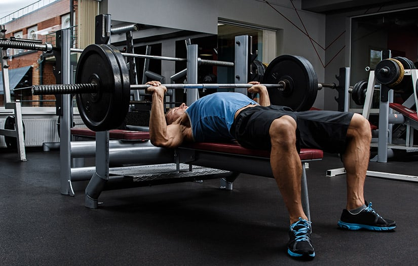
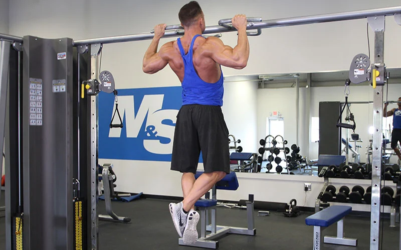
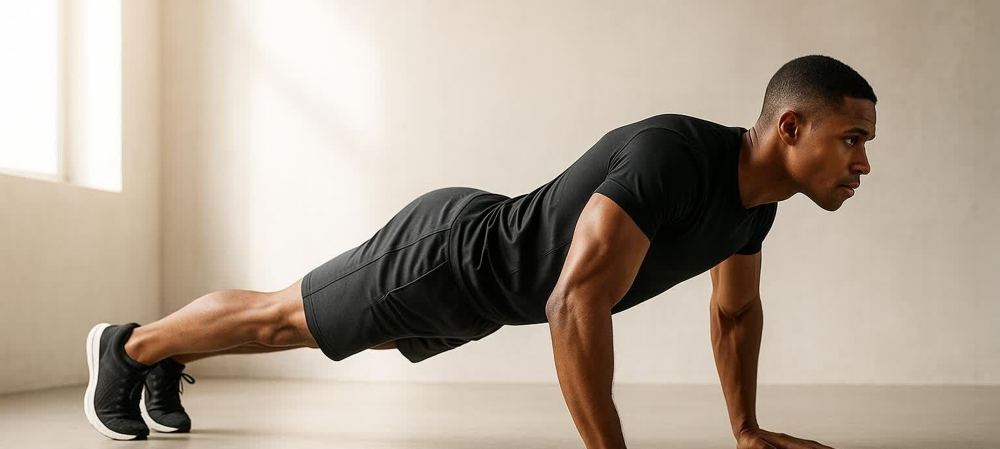
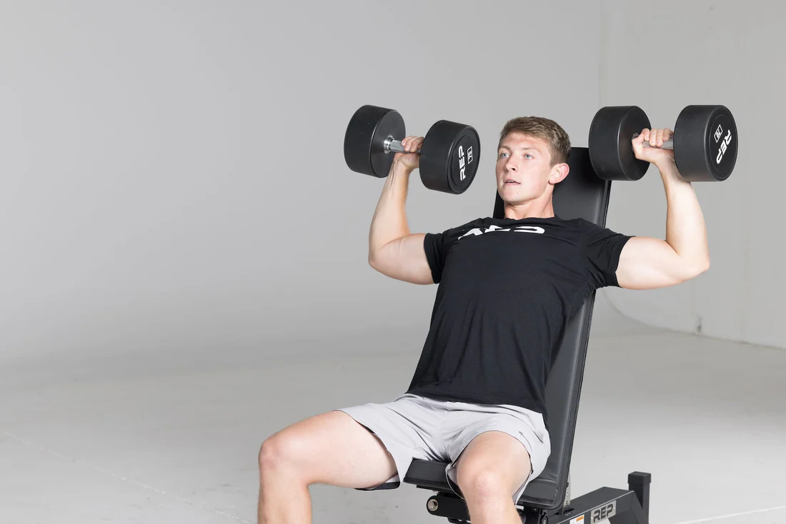

Exercise Analyzer
Select an exercise to see which muscles are working.

Bench Press

Squat

Deadlift

Pull-Up

Push-Up

Shoulder Press
Choose an Exercise
Muscle activation information will appear here.